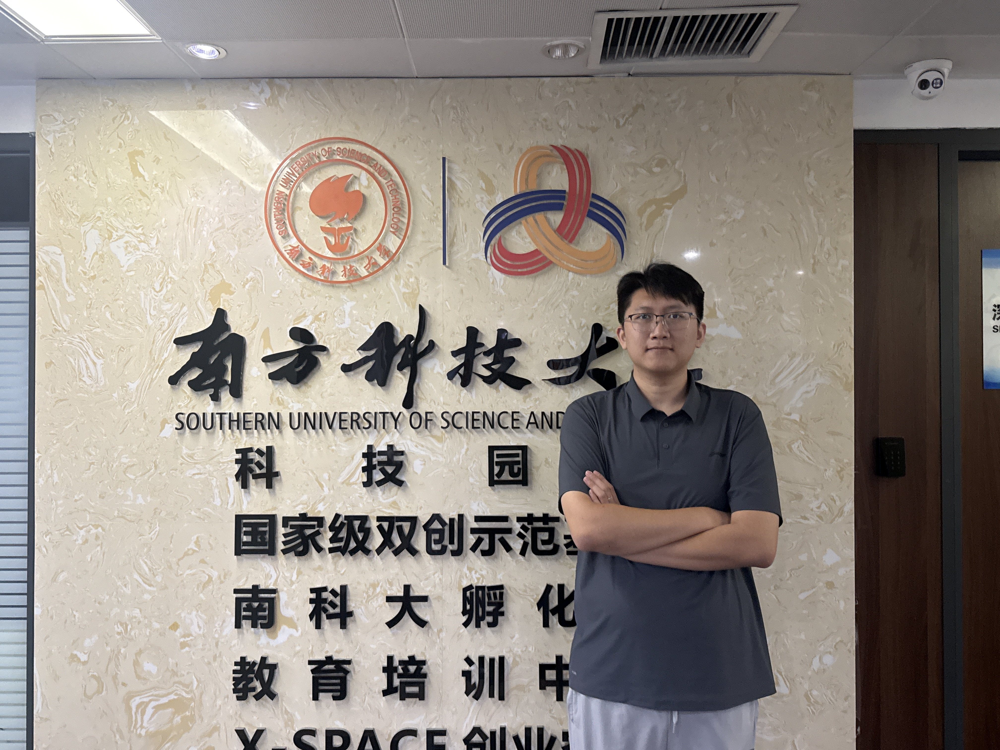
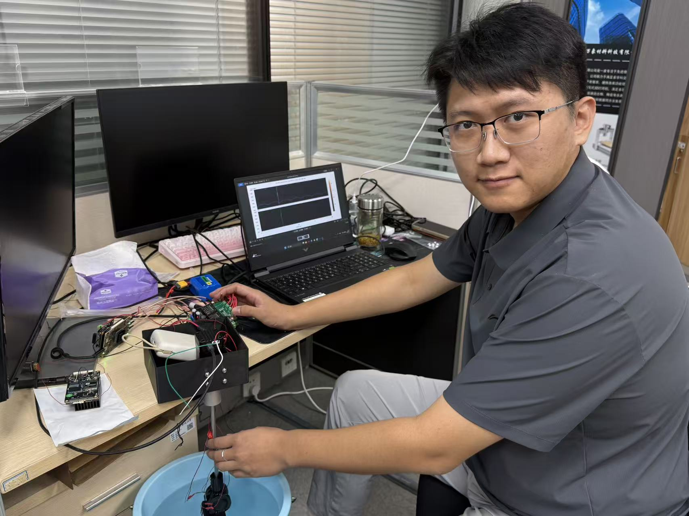
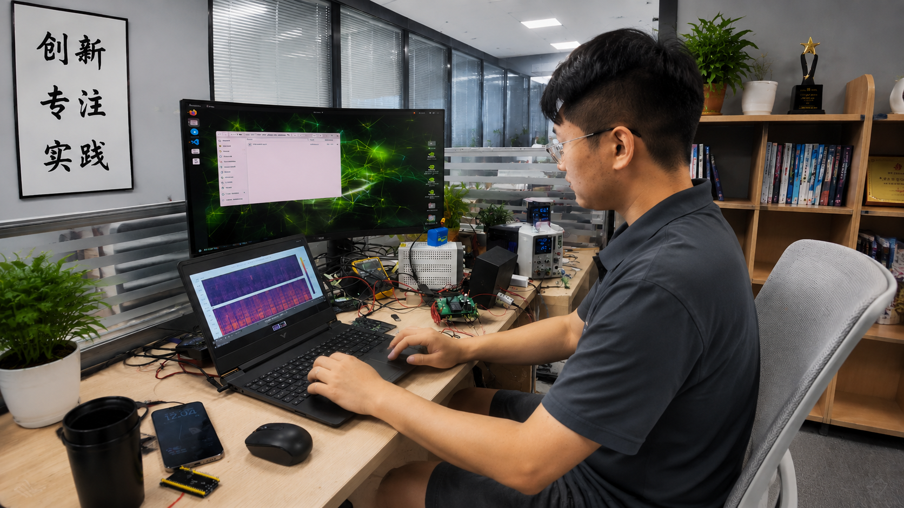

- Name
- William Liu
- Hometown
- Shenzhen
- Occupation
- Kastave CEO
- Favourite Method / Rig
- Drop Shot Fishing; Jigging; Trolling
- Favorite fish species
- Smallmouth Bass; Walleye
William is a sonar expert, but ironically, he often struggled to catch fish himself. His experience made him realize that advanced underwater sensing technology should be easier for everyday anglers to use. Kastave began from this gap between professional sonar knowledge and real fishing results.
At Kastave, William leads the product vision around sonar sensing, signal interpretation and turning raw underwater data into a scouting workflow anglers can understand quickly in real fishing conditions.


